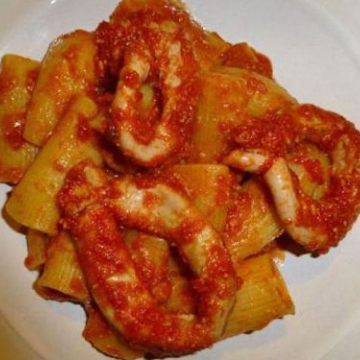
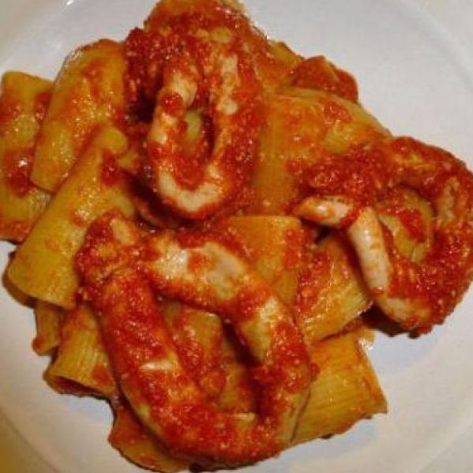

The Sieve
A Podcast On Pairings
 

Rome
We're pairing Caravaggio's Judith Beheading Holofernes with the classic Roman pajata.
January 28 2020Venice
We're pairing works from the Venice Biennale, like Damien Hirst's Treasures from the Wreck of the Unbelievable, with the Venetian bacala mantecato.
January 28 2020Chile vs USA
We're pairing abstract expressionism with Chilean street food.
January 28 202080s Americana
We're pairing Basquiat's Five Thousand Dollars with American appetizer culture.
January 28 2020Sardinia
We're pairing Hieronymous Bosch's Garden of Earthly Delights with casu marzu.
January 28 2020Global: The Atomic Level
We're paring Hilma af Klint's body of work with molecular gastronomy.
January 28 2020Time and Method
We're pairing Robert Smithson's Spiral Jetty with salt slabs and umami flavor profiles.
January 28 2020